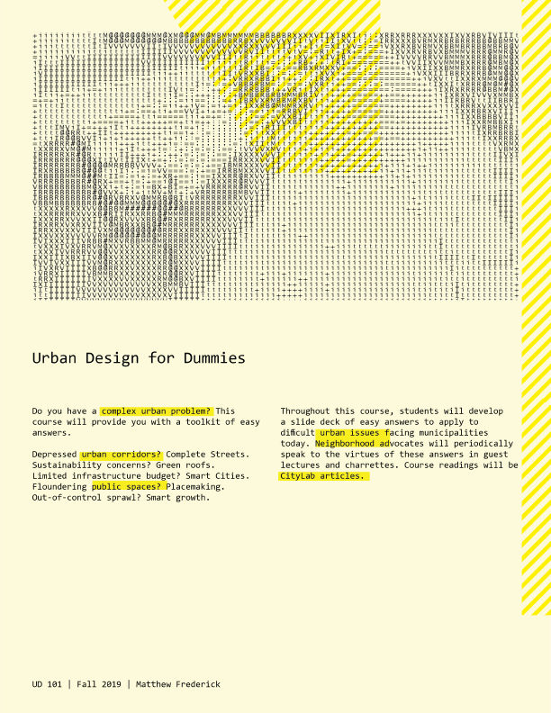

Do you have a complex urban problem? This course will provide you with a toolkit of easy answers.
Depressed urban corridors? Complete Streets.
Sustainability concerns? Green roofs.
Limited infrastructure budget? Smart Cities.
Floundering public spaces? Placemaking.
Out-of-control sprawl? Smart growth.
Throughout this course, students will develop a slide deck of easy answers to apply to difficult urban issues facing municipalities today. Neighborhood advocates will periodically speak to the virtues of theses answers in guest lectures and charrettes. Course readings will be CityLab articles.